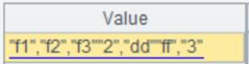
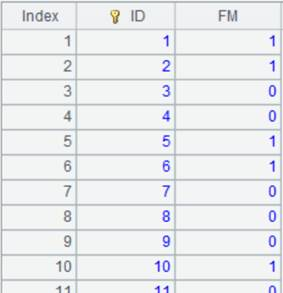

Description:
Create a database cursor by executing an SQL statement.
Syntax:
db. cursor(sql {,args ��})
Note:
The function creates a database cursor by executing SQL. The cursor will be automatically closed after a full data scan.
Parameter:
|
db |
Database connection. |
|
sql |
A SQL query statement. |
|
args |
Parameters passed to SQL, which can be values or names defined; separate multiple parameters with comma. |
Option:
|
@i |
If the result set has only one column, the content of the returned cursor is a sequence. |
|
@d |
Convert the numeric data type to the double data type, instead of the decimal data type. |
|
@x |
Disconnect from the database automatically when the cursor is closed; this option applies to connect -mode database connection only; with this option, the cursor the function returns is irreversible. |
|
@v |
Generate a cursor of pure table sequence or pure sequence; only supported by esProc Enterprise Edition. |
Return value:
Cursor
Example:
|
|
A |
|
|
1 |
=demo.cursor("select * from SCORES") |
Parameter db is data source name; this requires that demo data source is already connected. |
|
2 |
=connect("demo") |
|
|
3 |
=A2.cursor@x("select * from SCORES").fetch() |
With connect-mode database connection, @x is used. |
|
4 |
=A2.cursor("select * from STUDENTS") |
Error is reported: Data Source demo is shutdown or wrong setup., which prompts you that data source isn��t started as database is automatically disconnected when A3��s cursor is closed. |
When the SQL query statement contains parameters:
|
|
A |
|
|
1 |
>arg2="R&D" |
Define parameter name as arg2 and parameter value as "R&D". |
|
2 |
=demo.cursor("select EID,NAME,DEPT,GENDER from employee where EID<? and DEPT=? and GENDER=?",arg1,arg2,"M") |
Query employee table, where arg1 is a cellset parameter whose value is 100 and arg2 is a parameter defined in A1, and the 3rd parameter receives value ��M�� directly. |
|
3 |
=A2.fetch() |
Fetch data from A2��s cursor.  |
Return cursor containing other types of data:
|
|
A |
|
|
1 |
=demo.cursor("select NAME from STUDENTS") |
Query NAME field of STUDENTS table from demo data source and return a cursor whose content is as follows:  |
|
2 |
=demo.cursor@i("select NAME from STUDENTS") |
When the result set contains only one column, use @i option to return content of the cursor as a sequence.
|
|
3 |
=demo.cursor@v("select * from STUDENTS") |
Return a cursor of pure table sequence. |
|
4 |
=demo.cursor@iv("select NAME from STUDENTS") |
Return a cursor of pure sequence. |
|
5 |
=mysql.cursor@d("select * from ta") |
As @d option is present, numeric data is converted to double type.
|


Related function: